20. Sécurisation du service web d'accès à la base [dbproduitscategories]
20.1. Mise en place de l'environnement de l'environnement de travail
Nous mettrons en place la sécurité du service web avec les projets suivants :
 |
- les projets [spring-security-*] seront trouvés dans le dossier [<exemples>\spring-database-generic\spring-security] ;
- la sécurité va être mise en place pour le SGBD MySQL avec une couche [DAO / JDBC] puis une couche [DAO / JPA / Hibernate] ;
- faire Alt-F5 puis régénérer tous les projets Maven ;
Nous avons besoin de créer des utilisateurs dans la base [dbproduitscategories]. Pour cela, utilisez la configuration d'exécution [spring-security-create-users-hibernate-eclipselink] :
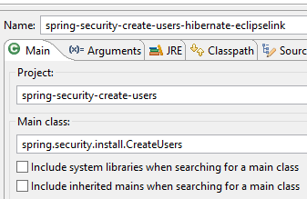 | 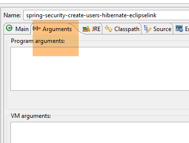 |
L'exécution de cette configuration remplit les tables [USERS, ROLES, USERS_ROLES] de la table [dbproduitscategories] :
 |
 |
Les identifiants créés [login/passwd] sont les suivants : [admin/admin], [user/user], [guest/guest]. En base, les mots de passe sont cryptés.
 |

Ceci fait, exécutez la configuration d'exécution nommée [spring-security-server-jpa-generic-hibernate-eclipselink] qui lance le service web sécurisé (MySQL doit être lancé) :
 |  |
Puis exécutez la configuration d'exécution nommée [spring-security-client-generic-JUnitTestDao] qui teste le service web sécurisé :
 | 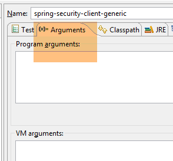 |
Le test doit réussir.
20.2. Le projet Eclipse [spring-security-server-jdbc-generic]
Le service web sécurisé est implémenté par le projet [spring-security-server-jdbc-generic] :
 |
Ci-dessus :
- la couche [DAO1] est la couche [DAO] qui gère les tables [PRODUITS] et [CATEGORIES] de la base [dbproduitscategories]. Elle a déjà été écrite ;
- la couche [DAO2] est la couche [DAO] qui gère les tables [USERS], [ROLES] et [USERS_ROLES] de la base [dbproduitscategories]. Elle reste à écrire ;
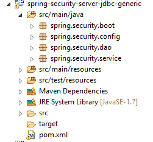 |
20.2.1. La configuration Maven
Le projet [spring-security-server-jdbc-generic] est un projet Maven configuré par le fichier [pom.xml] suivant :
<project xmlns="http://maven.apache.org/POM/4.0.0" xmlns:xsi="http://www.w3.org/2001/XMLSchema-instance"
xsi:schemaLocation="http://maven.apache.org/POM/4.0.0 http://maven.apache.org/xsd/maven-4.0.0.xsd">
<modelVersion>4.0.0</modelVersion>
<groupId>dvp.spring.database</groupId>
<artifactId>spring-security-server-jdbc-generic</artifactId>
<version>0.0.1-SNAPSHOT</version>
<name>spring-security-server-jdbc-generic</name>
<description>démo spring security</description>
<properties>
<project.build.sourceEncoding>UTF-8</project.build.sourceEncoding>
<java.version>1.7</java.version>
</properties>
<parent>
<groupId>org.springframework.boot</groupId>
<artifactId>spring-boot-starter-parent</artifactId>
<version>1.2.3.RELEASE</version>
</parent>
<dependencies>
<!-- Spring security -->
<dependency>
<groupId>org.springframework.boot</groupId>
<artifactId>spring-boot-starter-security</artifactId>
</dependency>
<!-- serveur web / jSON -->
<dependency>
<groupId>dvp.spring.database</groupId>
<artifactId>spring-webjson-server-jdbc-generic</artifactId>
<version>0.0.1-SNAPSHOT</version>
</dependency>
</dependencies>
<!-- plugins -->
<build>
<plugins>
<plugin>
<groupId>org.apache.maven.plugins</groupId>
<artifactId>maven-surefire-plugin</artifactId>
<version>2.18.1</version>
</plugin>
</plugins>
</build>
</project>
- lignes 29-33 : on reprend l'existant avec l'archive du service web / json / jdbc étudié ;
- lignes 24-27 : la dépendance qui amène les classes de Spring Security ;
Au final, le projet présente les dépendances suivantes sur les autres projets chargés dans Eclipse :
 |
20.2.2. La couche [DAO2]
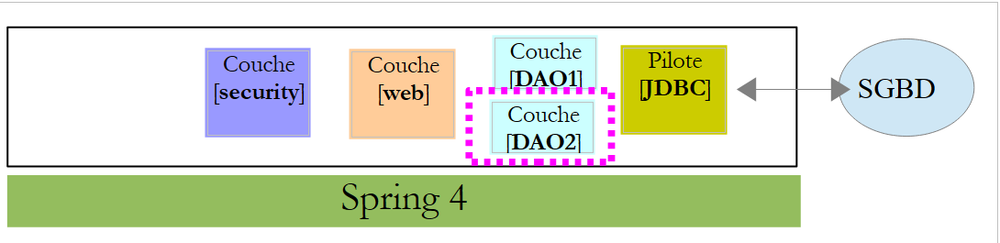 |
Ci-dessus :
- la couche [DAO1] est la couche [DAO] qui gère les tables [PRODUITS] et [CATEGORIES] de la base [dbproduitscategories]. Elle a déjà été écrite ;
- la couche [DAO2] est la couche [DAO] qui gère les tables [USERS], [ROLES] et [USERS_ROLES] de la base [dbproduitscategories]. C'est celle que nous allons écrire maintenant ;
 |
Spring Security impose la création d'une classe implémentant l'interface [UsersDetail] suivante :
 |
Cette interface est ici implémentée par la classe [AppUserDetails] :
package spring.security.dao;
import generic.jdbc.config.ConfigJdbc;
import java.sql.ResultSet;
import java.sql.SQLException;
import java.util.ArrayList;
import java.util.Collection;
import java.util.Collections;
import java.util.List;
import org.springframework.jdbc.core.RowMapper;
import org.springframework.jdbc.core.namedparam.NamedParameterJdbcTemplate;
import org.springframework.security.core.GrantedAuthority;
import org.springframework.security.core.authority.SimpleGrantedAuthority;
import org.springframework.security.core.userdetails.UserDetails;
import spring.jdbc.entities.Role;
import spring.jdbc.entities.User;
import spring.jdbc.infrastructure.DaoException;
public class AppUserDetails implements UserDetails {
private static final long serialVersionUID = 1L;
// JdbcTemplate
private NamedParameterJdbcTemplate namedParameterJdbcTemplate;
// propriétés
private User user;
private String simpleClassName = getClass().getSimpleName();
// constructeurs
public AppUserDetails() {
}
public AppUserDetails(User user, NamedParameterJdbcTemplate namedParameterJdbcTemplate) {
this.user = user;
this.namedParameterJdbcTemplate = namedParameterJdbcTemplate;
}
// -------------------------interface
@Override
public Collection<? extends GrantedAuthority> getAuthorities() {
Collection<GrantedAuthority> authorities = new ArrayList<>();
for (Role role : getRoles(user.getId())) {
authorities.add(new SimpleGrantedAuthority(role.getName()));
}
return authorities;
}
...
// méthodes privées----------------
private List<Role> getRoles(Long id) {
try {
// on cherche l'utilisateur via son id
return namedParameterJdbcTemplate.query(ConfigJdbc.SELECT_ROLES_BYUSERID, Collections.singletonMap("id", id), new ShortRoleMapper());
} catch (Exception e) {
//e.printStackTrace();
throw new DaoException(167, e, simpleClassName);
}
}
}
// --------------------- mappers
class ShortRoleMapper implements RowMapper<Role> {
@Override
public Role mapRow(ResultSet rs, int rowNum) throws SQLException {
return new Role(rs.getLong("r_ID"), rs.getLong("r_VERSIONING"), rs.getString("r_NAME"));
}
}
- ligne 22 : la classe [AppUserDetails] implémente l'interface [UserDetails] ;
- lignes 29-30 : la classe encapsule un utilisateur (ligne 19) et le repository qui permet d'avoir les détails de cet utilisateur (ligne 20) ;
- ligne 27 : la base de données va être accédée via JDBC au moyen de l'objet [NamedParameterJdbcTemplate namedParameterJdbcTemplate] défini dans le projet [spring-jdbc-generic-04]. On notera que cet objet n'est pas injecté par Spring comme il a été souvent fait. Il est fourni au constructeur des lignes 36-39 Pourquoi ? parce que la classe [AppUserDetails] n'est pas un composant Spring (absence de l'annotation @Component) et que donc on ne peut y faire d'injections ;
- lignes 36-39 : le constructeur qui instancie la classe avec un utilisateur et son repository ;
- lignes 42-49 : implémentation de la méthode [getAuthorities] de l'interface [UserDetails]. Elle doit construire une collection d'éléments de type [GrantedAuthority] ou dérivé. Ici, nous utilisons le type dérivé [SimpleGrantedAuthority] (ligne 46) qui encapsule le nom d'un des rôles de l'utilisateur de la ligne 29 ;
- lignes 45-47 : on parcourt la liste des rôles de l'utilisateur de la ligne 29 pour construire une liste d'éléments de type [SimpleGrantedAuthority] ;
- ligne 45 : pour obtenir les rôles de l'utilisateur, on utilise la méthode privée [getRoles] de la ligne 53 ;
- ligne 56 : exécute l'ordre SQL [ConfigJdbc.SELECT_ROLES_BYUSERID] (défini dans [Configjdbc]) suivant :
public static final String SELECT_ROLES_BYUSERID = "SELECT DISTINCT r.ID as r_ID, r.VERSIONING as r_VERSIONING, r.NAME as r_NAME FROM ROLES r, USERS u, USERS_ROLES ur WHERE u.ID=:id AND ur.USER_ID=u.ID AND ur.ROLE_ID=r.ID";
Cette requête SQL fait une jointure entre les trois tables [USERS, ROLES, USERS_ROLES] pour obtenir les rôles d'un utilisateur identifié par sa clé primaire. Elle est paramétrée par la clé primaire [:id] de l'utilisateur dont on cherche les rôles.
- ligne 56 : chaque ligne résultat du [SELECT] est transformée en entité [Role] par la classe [ShortRowMapper] des lignes 66-72 ;
Revenons au code de la classe [AppUserDetails] :
package spring.security.dao;
...
public class AppUserDetails implements UserDetails {
private static final long serialVersionUID = 1L;
// JdbcTemplate
private NamedParameterJdbcTemplate namedParameterJdbcTemplate;
// propriétés
private User user;
private String simpleClassName = getClass().getSimpleName();
// constructeurs
public AppUserDetails() {
}
public AppUserDetails(User user, NamedParameterJdbcTemplate namedParameterJdbcTemplate) {
this.user = user;
this.namedParameterJdbcTemplate = namedParameterJdbcTemplate;
}
// -------------------------interface
@Override
public Collection<? extends GrantedAuthority> getAuthorities() {
Collection<GrantedAuthority> authorities = new ArrayList<>();
for (Role role : getRoles(user.getId())) {
authorities.add(new SimpleGrantedAuthority(role.getName()));
}
return authorities;
}
@Override
public String getPassword() {
return user.getPassword();
}
@Override
public String getUsername() {
return user.getLogin();
}
@Override
public boolean isAccountNonExpired() {
return true;
}
@Override
public boolean isAccountNonLocked() {
return true;
}
@Override
public boolean isCredentialsNonExpired() {
return true;
}
@Override
public boolean isEnabled() {
return true;
}
// getters et setters
...
}
- lignes 35-37 : implémentent la méthode [getPassword] de l'interface [UserDetails]. On rend le mot de passe de l'utilisateur de la ligne 12 ;
- lignes 39-42 : implémentent la méthode [getUserName] de l'interface [UserDetails]. On rend le login de l'utilisateur de la ligne 12 ;
- lignes 44-47 : le compte de l'utilisateur n'expire jamais ;
- lignes 49-52 : le compte de l'utilisateur n'est jamais bloqué ;
- lignes 54-57 : les identifiants de l'utilisateur n'expirent jamais ;
- lignes 59-62 : le compte de l'utilisateur est toujours actif ;
Spring Security impose également l'existence d'une classe implémentant l'interface [AppUserDetailsService] :
 |
Cette interface est implémentée par la classe [AppUserDetailsService] suivante :
package spring.security.dao;
import generic.jdbc.config.ConfigJdbc;
import java.sql.ResultSet;
import java.sql.SQLException;
import java.util.Collections;
import java.util.List;
import org.springframework.beans.factory.annotation.Autowired;
import org.springframework.jdbc.core.RowMapper;
import org.springframework.jdbc.core.namedparam.NamedParameterJdbcTemplate;
import org.springframework.security.core.userdetails.UserDetails;
import org.springframework.security.core.userdetails.UserDetailsService;
import org.springframework.security.core.userdetails.UsernameNotFoundException;
import org.springframework.stereotype.Service;
import spring.jdbc.entities.User;
import spring.jdbc.infrastructure.DaoException;
@Service
public class AppUserDetailsService implements UserDetailsService {
// injections
@Autowired
private NamedParameterJdbcTemplate namedParameterJdbcTemplate;
// local
private String simpleClassName = getClass().getSimpleName();
@Override
public UserDetails loadUserByUsername(String login) throws UsernameNotFoundException {
List<User> users;
try {
// on cherche l'utilisateur via son login
users = namedParameterJdbcTemplate.query(ConfigJdbc.SELECT_USER_BYLOGIN,
Collections.singletonMap("login", login), new ShortUserMapper());
} catch (Exception e) {
throw new DaoException(145, e, simpleClassName);
}
// trouvé ?
if (users.size() == 0) {
throw new UsernameNotFoundException(String.format("login [%s] inexistant", login));
}
// on rend les détails de l'utilisateur
return new AppUserDetails(users.get(0), namedParameterJdbcTemplate);
}
}
// --------------------- mappers
class ShortUserMapper implements RowMapper<User> {
@Override
public User mapRow(ResultSet rs, int rowNum) throws SQLException {
return new User(rs.getLong("u_ID"), rs.getLong("u_VERSIONING"), rs.getString("u_NAME"), rs.getString("u_LOGIN"),
rs.getString("u_PASSWORD"));
}
}
- ligne 21 : la classe sera un composant Spring ;
- lignes 25-26 : la base de données va être accédée via JDBC au moyen de l'objet [NamedParameterJdbcTemplate namedParameterJdbcTemplate] défini dans les beans du projet [spring-jdbc-generic-04] ;
- lignes 31-49 : implémentation de la méthode [loadUserByUsername] de l'interface [UserDetailsService] (ligne 22). Le paramètre est le login de l'utilisateur ;
- lignes 36-37 : l'utilisateur est recherché via son login. L'ordre SQL [ConfigJdbc.SELECT_USER_BYLOGIN] est le suivant :
public static final String SELECT_USER_BYLOGIN = "SELECT u.ID as u_ID, u.VERSIONING as u_VERSIONING, u.NAME as u_NAME,u.LOGIN as u_LOGIN,u.PASSWORD as u_PASSWORD FROM USERS u WHERE u.LOGIN= :login";
Chaque ligne rendue par le SELECT est transformée en entité [User] par la classe [ShortUserMapper] des lignes 52-58.
- lignes 42-44 : s'il n'est pas trouvé, une exception est lancée ;
- ligne 46 : un objet [AppUserDetails] est construit et rendu. Il est bien de type [UserDetails] (ligne 32). On passe deux informations à son constructeur :
- l'utilisateur qu'on a trouvé ;
- l'objet [namedParameterJdbcTemplate] qui va permettre à la classe [AppUserDetails] de requêter la base de données ;
20.2.3. La couche [web]
 |
Le projet [spring-security-server-jdbc-generic] a une dépendance sur le projet [spring-webjson-server-jdbc-generic] :
|
C'est ce projet qui implémente la couche [web]. Elle n'a pas à être modifiée.
20.2.4. La configuration de la sécurité du projet
 |
Le projet est configuré par la classe [AppConfig] suivante :
1  |
Nous avons déjà rencontré une classe de configuration de Spring Security (cg paragraphe 19.2.4) :
package hello;
import org.springframework.context.annotation.Configuration;
import org.springframework.security.config.annotation.authentication.builders.AuthenticationManagerBuilder;
import org.springframework.security.config.annotation.web.builders.HttpSecurity;
import org.springframework.security.config.annotation.web.configuration.WebSecurityConfigurerAdapter;
import org.springframework.security.config.annotation.web.servlet.configuration.EnableWebMvcSecurity;
@Configuration
@EnableWebMvcSecurity
public class WebSecurityConfig extends WebSecurityConfigurerAdapter {
@Override
protected void configure(HttpSecurity http) throws Exception {
http.authorizeRequests().antMatchers("/", "/home").permitAll().anyRequest().authenticated();
http.formLogin().loginPage("/login").permitAll().and().logout().permitAll();
}
@Override
protected void configure(AuthenticationManagerBuilder auth) throws Exception {
auth.inMemoryAuthentication().withUser("user").password("password").roles("USER");
}
}
Nous allons suivre la même démarche :
- ligne 11 : définir une classe qui étend la classe [WebSecurityConfigurerAdapter] ;
- ligne 13 : définir une méthode [configure(HttpSecurity http)] qui définit les droits d'accès aux différentes URL du service web ;
- ligne 19 : définir une méthode [configure(AuthenticationManagerBuilder auth)] qui définit les utilisateurs et leurs rôles ;
La classe [AppConfig] sera la suivante :
package spring.security.config;
import org.springframework.beans.factory.annotation.Autowired;
import org.springframework.context.annotation.ComponentScan;
import org.springframework.context.annotation.Configuration;
import org.springframework.context.annotation.Import;
import org.springframework.http.HttpMethod;
import org.springframework.security.config.annotation.authentication.builders.AuthenticationManagerBuilder;
import org.springframework.security.config.annotation.web.builders.HttpSecurity;
import org.springframework.security.config.annotation.web.configuration.EnableWebSecurity;
import org.springframework.security.config.annotation.web.configuration.WebSecurityConfigurerAdapter;
import org.springframework.security.crypto.bcrypt.BCryptPasswordEncoder;
import spring.security.dao.AppUserDetailsService;
import spring.webjson.server.config.WebConfig;
@Configuration
@EnableWebSecurity
@ComponentScan(basePackages = { "spring.security.dao", "spring.security.service" })
@Import({ spring.webjson.server.config.AppConfig.class, WebConfig.class })
public class AppConfig extends WebSecurityConfigurerAdapter {
@Autowired
private AppUserDetailsService appUserDetailsService;
// sécurisation
private boolean activateSecurity = true;
@Override
protected void configure(AuthenticationManagerBuilder registry) throws Exception {
// l'authentification est faite par le bean [appUserDetailsService]
// le mot de passe est crypté par l'algorithme de hachage BCrypt
registry.userDetailsService(appUserDetailsService).passwordEncoder(new BCryptPasswordEncoder());
}
@Override
protected void configure(HttpSecurity http) throws Exception {
// CSRF
http.csrf().disable();
// application sécurisée ?
if (activateSecurity) {
// le mot de passe est transmis par le header Authorization: Basic xxxx
http.httpBasic();
// la méthode HTTP OPTIONS doit être autorisée pour tous
http.authorizeRequests() //
.antMatchers(HttpMethod.OPTIONS, "/", "/**").permitAll();
// seul le rôle ADMIN peut utiliser l'application
http.authorizeRequests() //
.antMatchers("/", "/**") // toutes les URL
.hasRole("ADMIN");
// session ou pas ?
//http.sessionManagement().sessionCreationPolicy(SessionCreationPolicy.STATELESS);
}
}
}
- ligne 17 : la classe est une classe de configuration Spring ;
- ligne 18 : active les éléments de Spring Security ;
- ligne 26 : on récupère les composants Spring de la couche [DAO2] et ceux du package [spring.security.service] dont nous parlerons ultérieurement ;
- ligne 23 : on importe les beans du projet [spring-webjson-server-jdbc-generic] qui implémente la couche [web]. Parmi ces beans, il y a également ceux de la couche [DAO1] ;
- lignes 22-23 : la classe [AppUserDetails] qui donne accès aux utilisateurs de l'application est injectée ;
- ligne 26 : un booléen qui sécurise (true) ou non (false) l'application web ;
- lignes 28-33 : la méthode [configure(HttpSecurity http)] définit les utilisateurs et leurs rôles. Elle reçoit en paramètre un type [AuthenticationManagerBuilder]. Ce paramètre est enrichi de deux informations (ligne 32) :
- une référence sur le service [appUserDetailsService] de la ligne 23 qui donne accès aux utilisateurs enregistrés. On notera ici que le fait qu'ils soient enregistrés dans une base de données n'apparaît pas. Ils pourraient donc être dans un cache, délivrés par un service web, ...
- le type de cryptage utilisé pour le mot de passe. Nous avons utilisé l'algorithme BCrypt ;
- lignes 35-53 : la méthode [configure(HttpSecurity http)] définit les droits d'accès aux URL du service web ;
- ligne 38 : nous avons vu dans le projet d'introduction que par défaut Spring Security gérait un jeton CSRF (Cross Site Request Forgery) que l'utilisateur qui voulait s'authentifier devait renvoyer au serveur. Ici ce mécanisme est désactivé. Ceci ajouté au booléen (isSecured=false) permet d'utiliser l'application web sans sécurité ;
- ligne 42 : on active le mode d'authentification par entête HTTP. Le client devra envoyer l'entête HTTP suivant :
où code est le codage de la chaîne login:password par l'algorithme Base64. Par exemple, le codage Base64 de la chaîne admin:admin est YWRtaW46YWRtaW4=. Donc l'utilisateur de login [admin] et de mot de passe [admin] enverra l'entête HTTP suivant pour s'authentifier :
- lignes 47-49 : indiquent que toutes les URL du service web sont accessibles aux utilisateurs ayant le rôle [ROLE_ADMIN]. Cela veut dire qu'un utilisateur n'ayant pas ce rôle ne peut accéder au service web ;
- ligne 51 : en mode [session], un utilisateur qui s'est authentifié une fois n'a pas besoin de le faire pour ses accès suivants. C'est la valeur par défaut de Spring Security. La ligne 51 désactive ce mode. Si elle est active l'utilisateur devra s'authentifier à chaque accès. Sans session, la réactivité du service web sécurisé est moindre qu'avec la session, aussi la ligne 51 a-t-elle été mise en commentaires ;
20.2.5. Tests du service web sécurisé
Nous allons tester le service web avec le client Chrome [Advanced Rest Client]. Nous allons avoir besoin de préciser l'entête HTTP d'authentification :
où [code] est le code Base64 de la chaîne [login:password]. Pour générer ce code, on peut utiliser le programme suivant du projet [spring-security-create-users] :
 |
package spring.security.helpers;
import org.springframework.security.crypto.codec.Base64;
public class Base64Encoder {
public static void main(String[] args) {
// on attend deux arguments : login password
if (args.length != 2) {
System.out.println("Syntaxe : login password");
System.exit(0);
}
// on récupère les deux arguments
String chaîne = String.format("%s:%s", args[0], args[1]);
// on encode la chaîne
byte[] data = Base64.encode(chaîne.getBytes());
// on affiche son encodage Base64
System.out.println(new String(data));
}
}
Si nous exécutons ce programme avec les deux arguments [admin admin] :
 |
nous obtenons le résultat suivant :
Nous sommes désormais prêts pour les tests :
- le SGBD MySQL doit être lancé ;
- nous remplissons les tables [PRODUITS] et [CATEGORIES] avec la configuration d'exécution nommée [spring-jdbc-generic-04-fillDataBase] :
 |
- si ce n'a pas été déjà fait, nous remplissons les tables [USERS, ROLES, USERS_ROLES] avec la configuration d'exécution nommée [spring-security-create-users-hibernate-eclipselink] :
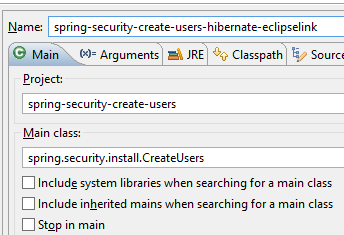 |
- nous lançons le service web sécurisé avec la configuration d'exécution nommée [spring-security-server-jdbc-generic] :
 |
Puis avec le client Chrome [Advanced Rest Client], nous demandons la version longue des toutes les catégories:
 |
- en [1], nous demandons l'URL des catégories longues ;
- en [2], avec une méthode GET ;
- en [3], nous donnons l'entête HTTP de l'authentification. Le code [YWRtaW46YWRtaW4=] est le codage Base64 de la chaîne [admin:admin] ;
- en [4], nous envoyons la commande HTTP ;
La réponse du serveur est la suivante :
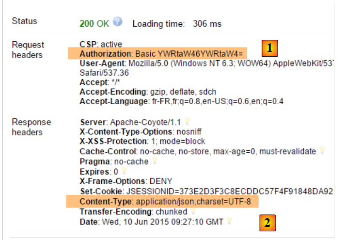 |
- en [1], l'entête HTTP d'authentification ;
- en [2], le serveur renvoie une réponse jSON ;
On obtient bien la liste des catégories :
 |
Tentons maintenant une requête HTTP avec un entête d'authentification incorrect. La réponse est alors la suivante :
 |
- en [1] : l'entête HTTP d'authentification ;
Nous obtenons la réponse suivante :
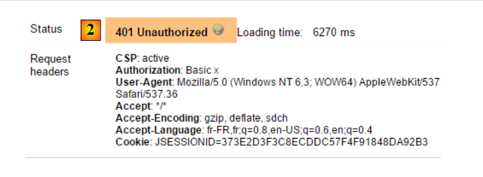 |
- en [2] : la réponse du service web ;
Maintenant, essayons l'utilisateur user / user. Il existe mais n'a pas accès au service web. Si nous exécutons le programme d'encodage Base64 avec les deux arguments [user user] :
 |
nous obtenons le résultat suivant :
 |
- en [1] : l'entête HTTP d'authentification erroné ;
 |
- en [2] : la réponse du service web. Elle est différente de la précédente qui était [401 Unauthorized]. Cette fois-ci, l'utilisateur s'est authentifié correctement mais n'a pas les droits suffisants pour accéder à l'URL ;
Un service web sécurisé est maintenant opérationnel.
20.2.6. Une URL d'authentification
 |
Nous allons créer une URL qui nous permettra de savoir si un utilisateur est autorisé ou non à accéder au service web. Pour cela nous créons le nouveau contrôleur MVC [AuthenticateController] suivant :
package spring.security.service;
import org.springframework.web.bind.annotation.RequestMapping;
import org.springframework.web.bind.annotation.RequestMethod;
import org.springframework.web.bind.annotation.RestController;
import spring.webjson.server.service.Response;
@RestController
public class AuthenticateController {
@RequestMapping(value = "/authenticate", method = RequestMethod.GET)
public Response<Void> authenticate() {
return new Response<Void>(0, null, null);
}
}
- ligne 9 : la classe [AuthenticateController] est un contrôleur Spring. A ce titre elle expose des URL. L'annotation [@RestController] indique que les méthodes traitant ces URL rendent elles-mêmes leur réponse au client ;
- ligne 11 : expose l'URL [/authenticate] ;
- lignes 12-14 : la méthode se contente de renvoyer un objet [Response] vide mais avec un [status] égal à 0, montrant qu'il n'y a pas eu d'erreur ;
A quoi sert cette URL ? Lorsque nous voudrons simplement authentifier un utilisateur, nous la demanderons. Nous avons vu que si la couche de sécurité n'accepte pas cet utilisateur, elle renvoie une exception. Voici un exemple ;
Avec l'utilisateur [admin:admin] :
 | 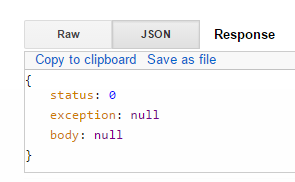 |
On a une réponse vide mais pas d'exception.
Avec l'utilisateur [user:user] :
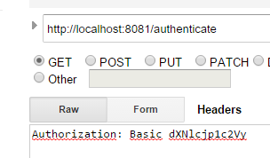 |  |
On a eu une exception.
20.2.7. Conclusion
L'ajout des classes nécessaires à Spring Security a pu se faire sans modifications du projet web / json originel. Ce cas très favorable découle du fait que les trois tables ajoutées dans la base de données sont indépendantes des tables existantes. On aurait même pu les mettre dans une base de données séparée. Dans d'autres cas, les tables ajoutées peuvent avoir des relations avec les tables existantes. Le code de la couche [DAO] existante doit alors être revu.
20.3. Un client programmé pour le service web / jSON sécurisé
Nous avons déjà écrit un client pour le service web / jSON non sécurisé :
 |
Nous allons maintenant créer un client programmé pour le service web sécurisé :
 |
 |
20.3.1. La couche [Client HTTP]
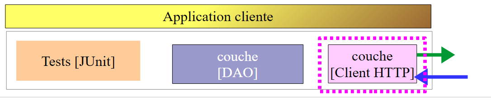 |
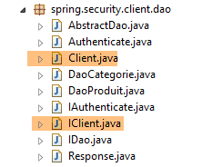 |  |
La classe [Client] assure la communication HTTP avec le serveur web / jSON sécurisé. Comme nous venons de le voir, dans cette communication HTTP, le client doit désormais envoyer un entête d'authentification, par exemple :
L'interface [IClient] devient la suivante :
package spring.webjson.client.dao;
import org.springframework.http.HttpMethod;
import spring.webjson.client.entities.Credentials;
public interface IClient {
public <T1, T2> T1 getResponse(Credentials credentials,String url, HttpMethod method, int errStatus, T2 body);
}
- ligne 8 : le 1er paramètre de la méthode [getResponse] est désormais un objet [Credentials] qui encapsule les identifiants d'un utilisateur :
package spring.security.client.entities;
public class Credentials {
// propriétés
private String login;
private String password;
// constructeur
public Credentials() {
}
public Credentials(String login, String password) {
this.login = login;
this.password = password;
}
// getters et setters
...
}
La classe [Client] qui implémente l'interface [IClient] évolue de la façon suivante :
package spring.security.client.dao;
...
@Component
public class Client implements IClient {
// injections
@Autowired
protected RestTemplate restTemplate;
@Autowired
protected String urlServiceWebJson;
// local
private String simpleClassName = getClass().getSimpleName();
private String getBase64(Credentials credentials) {
// on encode en base 64 l'utilisateur et son mot de passe - nécessite java 8
String chaîne = String.format("%s:%s", credentials.getLogin(), credentials.getPassword());
return String.format("Basic %s", new String(Base64.getEncoder().encode(chaîne.getBytes())));
}
// requête générique
@Override
public <T1, T2> T1 getResponse(Credentials credentials, String url, HttpMethod method, int errStatus, T2 body) {
// la réponse du serveur
ResponseEntity<Response<T1>> response;
try {
// on prépare la requête
RequestEntity<?> request = null;
if (method == HttpMethod.GET) {
HeadersBuilder<?> headersBuilder = RequestEntity.get(new URI(String.format("%s%s", urlServiceWebJson, url))) .accept(MediaType.APPLICATION_JSON);
if (credentials != null) {
headersBuilder = headersBuilder.header("Authorization", getBase64(credentials));
}
request = headersBuilder.build();
}
if (method == HttpMethod.POST) {
BodyBuilder bodyBuilder = RequestEntity.post(new URI(String.format("%s%s", urlServiceWebJson, url))).header("Content-Type", "application/json").accept(MediaType.APPLICATION_JSON);
if (credentials != null) {
bodyBuilder = bodyBuilder.header("Authorization", getBase64(credentials));
}
request = bodyBuilder.body(body);
}
// on exécute la requête
response = restTemplate.exchange(request, new ParameterizedTypeReference<Response<T1>>() {
});
} catch (Exception e) {
// on encapsule l'exception
throw new DaoException(errStatus, e, simpleClassName);
}
...
}
...
}
- lignes 33-35, 40-42 : si l'utilisateur [credentials] n'est pas null, alors on ajoute l'entête d'authentification. L'encodage Base64 de l'utilisateur et de son mot de passe est assuré par la méthode [getBase64] des lignes 17-21. On fera attention au fait que cette méthode utilise une classe [Base64] appartenant au JDK 1.8. Notre client HTTP peut fonctionner avec un service web non sécurisé. Il suffit de lui passer un [credentials] égal à null ;
- en-dehors des lignes précédentes, le code reste inchangé ;
20.3.2. La couche [DAO]
 |
20.3.2.1. L'interface [IDao]
 |
Toutes les méthodes de l'interface [IDao] du projet [spring-webjson-client-generic] reçoivent un paramètre supplémentaire [Credentials credentials] :
package spring.security.client.dao;
import java.util.List;
import spring.security.client.entities.AbstractCoreEntity;
import spring.security.client.entities.Credentials;
public interface IDao<T extends AbstractCoreEntity> extends IAuthenticate {
// liste de tous les entités T
public List<T> getAllShortEntities(Credentials credentials);
public List<T> getAllLongEntities(Credentials credentials);
// des entités particulières - version courte
public List<T> getShortEntitiesById(Credentials credentials, Iterable<Long> ids);
public List<T> getShortEntitiesById(Credentials credentials, Long... ids);
public List<T> getShortEntitiesByName(Credentials credentials, Iterable<String> names);
public List<T> getShortEntitiesByName(Credentials credentials, String... names);
// des entités particulières - version longue
public List<T> getLongEntitiesById(Credentials credentials, Iterable<Long> ids);
public List<T> getLongEntitiesById(Credentials credentials, Long... ids);
public List<T> getLongEntitiesByName(Credentials credentials, Iterable<String> names);
public List<T> getLongEntitiesByName(Credentials credentials, String... names);
// mise à jour de plusieurs entités
public List<T> saveEntities(Credentials credentials, Iterable<T> entities);
public List<T> saveEntities(Credentials credentials, @SuppressWarnings("unchecked") T... entities);
// suppression de toutes les entités
public void deleteAllEntities(Credentials credentials);
// suppression de plusieurs entités
public void deleteEntitiesById(Credentials credentials, Iterable<Long> ids);
public void deleteEntitiesById(Credentials credentials, Long... ids);
public void deleteEntitiesByName(Credentials credentials, Iterable<String> names);
public void deleteEntitiesByName(Credentials credentials, String... names);
public void deleteEntitiesByEntity(Credentials credentials, Iterable<T> entities);
public void deleteEntitiesByEntity(Credentials credentials, @SuppressWarnings("unchecked") T... entities);
}
- ligne 8 : l'interface [IDao] étend l'interface [IAuthenticate] suivante :
package spring.security.client.dao;
import spring.security.client.entities.Credentials;
public interface IAuthenticate {
// authentification
public void authenticate(Credentials credentials);
}
L'interface [IAuthenticate] n'a que l'unique méthode [authenticate]. Celle-ci ne rend rien (void) si l'utilisateur [Credentials credentials] est accepté par le service web sécurisé, une exception sinon.
20.3.2.2. La classe [AbstractDao]
 |
On rappelle que la classe [AbstractDao] est la classe parent des classes [DaoCategorie] qui gèrent les URL des catégories et [DaoProduit] qui gère les URL des produits. Toutes les méthodes de la classe [AbstractDao] du projet [spring-webjson-client-generic] reçoivent un paramètre supplémentaire [Credentials credentials] qu'elles passent à la classe fille. Voici un exemple :
@Override
public List<T1> getShortEntitiesById(Credentials credentials, Iterable<Long> ids) {
// validité de l'argument
List<T1> entities = checkNullOrEmptyArgument(true, ids);
if (entities != null) {
return entities;
}
// résultat
return getShortEntitiesById(credentials, Lists.newArrayList(ids));
}
- la méthode [getShortEntitiesById] reçoit le paramètre [Credentials credentials] (ligne 2) qu'elle transmet (ligne 9) à la méthode [getShortEntitiesById] de la classe fille ;
La classe [AbstractDao] a le squelette suivant :
package spring.security.client.dao;
import java.util.ArrayList;
import java.util.List;
import org.springframework.beans.factory.annotation.Autowired;
import spring.security.client.entities.AbstractCoreEntity;
import spring.security.client.entities.Credentials;
import spring.security.client.infrastructure.MyIllegalArgumentException;
import com.google.common.collect.Lists;
public abstract class AbstractDao<T1 extends AbstractCoreEntity> implements IDao<T1> {
@Autowired
private IAuthenticate authenticate;
...
}
- ligne 14 : la classe implémente l'interface [IDao] que nous avons décrite ;
- lignes 16-17 : une instance de l'interface [IAuthenticate] est injectée. Celle-ci est implémentée par la classe [Authenticate] suivante :
package spring.security.client.dao;
import org.springframework.beans.factory.annotation.Autowired;
import org.springframework.http.HttpMethod;
import org.springframework.stereotype.Component;
import spring.security.client.entities.Credentials;
@Component
public class Authenticate implements IAuthenticate{
@Autowired
protected IClient client;
// vérification [credentials,mdp]
public void authenticate(Credentials credentials) {
client.<Void, Void> getResponse(credentials, "/authenticate", HttpMethod.GET, 111, (Void) null);
}
}
- ligne 9 : la classe [Authenticate] est un composant Spring ;
- ligne 10 : qui implémente l'interface [IAuthenticate] ;
- lignes 11-12 : injection du client HTTP qui permet de dialoguer avec le service web sécurisé ;
- lignes 15-17 : implémentation de la méthode [authenticate] de l'interface ;
- ligne 16 : une commande HTTP GET est émise vers l'URL [/authenticate]. L'usage de cette URL a été montré au paragraphe 20.2.6. Son principe est que l'appel se termine par une exception si l'utilisateur [credentials] est soit inconnu, soit n'a pas les droits suffisants ;
La classe [AbstractDao] implémente la méthode [authenticate] de l'interface [IDao] de la façon suivante :
@Autowired
private IAuthenticate authenticate;
@Override
public void authenticate(Credentials credentials) {
authenticate.authenticate(credentials);
}
- ligne 7 : le travail est délégué à la méthode [authenticate] de la classe [Authenticate]. On aura donc une exception si l'utilisateur [Credentials credentials] n'est pas accepté par le service web sécurisé ;
20.3.2.3. Les classes [DaoCategorie, DaoProduit]
 |
Les classes [DaoCategorie, DaoProduit] sont celles du projet [spring-webjson-server-generic] avec le paramètre supplémentaire [Credentials credentials]. Voici un exemple :
@Component
public class DaoCategorie extends AbstractDao<Categorie> {
// injections
@Autowired
protected ApplicationContext context;
@Autowired
protected IClient client;
@Override
public List<Categorie> getAllShortEntities(Credentials credentials) {
try {
// filtres jSON
ObjectMapper mapper = context.getBean("jsonMapperShortCategorie", ObjectMapper.class);
// obtenir toutes les catégories
Object map = client.<List<Categorie>, Void> getResponse(credentials, "/getAllShortCategories", HttpMethod.GET,
202, null);
// la liste des catégories List<Categorie>
return mapper.readValue(mapper.writeValueAsString(map), new TypeReference<List<Categorie>>() {
});
} catch (DaoException e1) {
throw e1;
} catch (Exception e2) {
throw new DaoException(221, e2, simpleClassName);
}
}
....
20.3.3. La configuration Spring
 |
La classe [AppConfig] configure l'environnement Spring du projet. Elle est identique à ce qu'elle était dans le projet [spring-webjson-client-generic] à un détail près :
@Configuration
@ComponentScan({ "spring.security.client.dao" })
public class AppConfig {
- ligne 2 : il faut mettre le package de la nouvelle couche [DAO] ;
20.3.4. Tests de la couche [DAO]
 |
 |
20.3.4.1. Le test [JUnitTestCredentials]
Le test [JUnitTestCredentials] utilise la méthode [IDao.authenticate] pour vérifier la validité ou pas de certains utilisateurs :
package client.tests.junit;
import org.junit.Assert;
import org.junit.BeforeClass;
import org.junit.Test;
import org.junit.runner.RunWith;
import org.springframework.beans.factory.annotation.Autowired;
import org.springframework.boot.test.SpringApplicationConfiguration;
import org.springframework.test.context.junit4.SpringJUnit4ClassRunner;
import spring.security.client.config.AppConfig;
import spring.security.client.dao.IAuthenticate;
import spring.security.client.entities.Credentials;
import spring.security.client.infrastructure.DaoException;
@SpringApplicationConfiguration(classes = AppConfig.class)
@RunWith(SpringJUnit4ClassRunner.class)
public class JUnitTestCredentials {
// couche [DAO]
@Autowired
private IAuthenticate authenticate;
// utilisateurs
static private Credentials admin;
static private Credentials user;
static private Credentials unknown;
@BeforeClass
public static void init() {
admin = new Credentials("admin", "admin");
user = new Credentials("user", "user");
unknown = new Credentials("x", "y");
}
@Test()
public void checkUserUser() {
DaoException se = null;
try {
authenticate.authenticate(user);
} catch (DaoException e) {
se = e;
System.out.println("checkUserUser: " + e);
}
Assert.assertNotNull(se);
Assert.assertEquals("403 Forbidden", se.getExceptions().get(0).getErrorMessage());
}
@Test()
public void checkUserUnknown() {
DaoException se = null;
try {
authenticate.authenticate(unknown);
} catch (DaoException e) {
se = e;
System.out.println("checkUserUnknown : " + e);
}
Assert.assertNotNull(se);
Assert.assertEquals("401 Unauthorized", se.getExceptions().get(0).getErrorMessage());
}
@Test()
public void checkUserAdmin() {
DaoException se = null;
try {
authenticate.authenticate(admin);
} catch (DaoException e) {
se = e;
System.out.println("checkUserAdmin : " + e);
}
Assert.assertNull(se);
}
}
- lors de l'initialisation de la classe de test, lignes 29-34, trois utilisateurs sont créés :
- l'utilisateur [admin] a accès aux URL du service web. Il est testé aux lignes 63-72 ;
- l'utilisateur [user] existe mais n'est pas autorisé à utiliser les URL du service web. Il est testé aux lignes 37-47 ;
- l'utilisateur [unknown] n'existe pas. Il est testé aux lignes 50-60 ;
On lance le service web sécurisé avec la configuration d'exécution nommée [spring-security-server-jdbc-generic] [1] :
 |
On lance ensuite le test JUnit [JUnitTestCredentials] avec la configuration d'exécution [spring-security-client-generic-JUnitTestCredentials] [2]. Les résultats console obtenus sont les suivants :
et le test réussit :
 |
20.3.4.2. Le test [JUnitTestDao]
Le test [JUnitTestDao] est identique à ce qu'il était dans le projet non sécurisé [spring-webjson-client-generic] si ce n'est que maintenant les méthodes de la couche [DAO] testées ont toutes comme premier paramètre l'utilisateur [admin / admin] :
@SpringApplicationConfiguration(classes = AppConfig.class)
@RunWith(SpringJUnit4ClassRunner.class)
public class JUnitTestDao {
// contexte Spring
@Autowired
private ApplicationContext context;
// couche [DAO]
@Autowired
private IDao<Produit> daoProduit;
@Autowired
private IDao<Categorie> daoCategorie;
....
// utilisateurs
static private Credentials admin;
@BeforeClass
public static void init() {
admin = new Credentials("admin", "admin");
}
@Before
public void clean() {
// on nettoie la base avant chaque test
log("Vidage de la base de données", 1);
// on vide la table [CATEGORIES] et par cascade la table [PRODUITS]
daoCategorie.deleteAllEntities(admin);
// on vide les dictionnaires
for (Long id : mapCategories.keySet()) {
mapCategories.remove(id);
}
for (Long id : mapProduits.keySet()) {
mapProduits.remove(id);
}
}
private List<Categorie> fill(int nbCategories, int nbProduits) {
// on remplit les tables
...
// ajout de la catégorie - par cascade les produits vont eux aussi être
// insérés - on rend le résultat en même temps
return daoCategorie.saveEntities(admin, categories);
}
private Object[] showDataBase() throws BeansException, JsonProcessingException {
// liste des catégories
log("Liste des catégories", 2);
List<Categorie> categories = daoCategorie.getAllShortEntities(admin);
affiche(categories, context.getBean("jsonMapperShortCategorie", ObjectMapper.class));
// liste des produits
log("Liste des produits", 2);
List<Produit> produits = daoProduit.getAllShortEntities(admin);
affiche(produits, context.getBean("jsonMapperShortProduit", ObjectMapper.class));
// résultat
return new Object[] { categories, produits };
}
...
Toutes les opérations se font avec l'utilisateur [admin / admin] qui a seul le droit d'accès au service web sécurisé.
On lancera le test avec la configuration d'exécution nommée [spring-security-client-generic-JUnitTestDao] :
 |
Le test passe mais on peut constater qu'il est plus lent qu'avec le service web non sécurisé. La sécurisation d'une application augmente sensiblement ses temps de réponse. On peut noter un facteur important dans les performances du service web sécurisé : dans la classe [AppConfig] qui le configure, nous avons écrit :
@Override
protected void configure(HttpSecurity http) throws Exception {
// CSRF
http.csrf().disable();
// application sécurisée ?
if (activateSecurity) {
// le mot de passe est transmis par le header Authorization: Basic xxxx
http.httpBasic();
// la méthode HTTP OPTIONS doit être autorisée pour tous
http.authorizeRequests() //
.antMatchers(HttpMethod.OPTIONS, "/", "/**").permitAll();
// seul le rôle ADMIN peut utiliser l'application
http.authorizeRequests() //
.antMatchers("/", "/**") // toutes les URL
.hasRole("ADMIN");
// pas de session
http.sessionManagement().sessionCreationPolicy(SessionCreationPolicy.STATELESS);
}
}
La ligne 17 a un coût. Elle force ou non l'utilisateur à s'authentifier à chaque accès. Si on la met en commentaires, la durée du test JUnit est nettement moindre, ceci parce que l'utilisateur [admin] ne s'authentifie que pour le premier test et pas pour les suivants (même si l'entête HTTP d'authentification est envoyé par le client, le serveur lui ne revérifie pas le mot de passe de l'utilisateur).
20.4. Le projet Eclipse [spring-security-server-jpa-generic]
Le service web sécurisé va être maintenant implémenté par le projet [spring-security-server-jpa-generic] qui s'appuie sur le projet [spring-jpa-generic] qui gère les accès à la base de données avec Spring Data JPA :
 |
Ci-dessus :
- la couche [DAO1] est la couche [DAO] qui gère les tables [PRODUITS] et [CATEGORIES] de la base [dbproduitscategories]. Elle a déjà été écrite ;
- la couche [DAO2] est la couche [DAO] qui gère les tables [USERS], [ROLES] et [USERS_ROLES] de la base [dbproduitscategories]. Elle reste à écrire ;
Le projet [spring-security-server-jpa-generic] est d'abord obtenu par recopie du projet étudié précédemment [spring-security-server-jdbc-generic]. En effet , les couches [web] et [security] ne changent pas car :
- la couche [DAO1 / Repositories / JPA] (déjà écrite) a la même interface que la couche [DAO1 / JDBC] ;
- la couche [DAO2 / Repositories / JPA] (à écrire) aura la même interface que la couche [DAO2 / JDBC] ;
Le projet [spring-security-server-jpa-generic] est le suivant :
 |
- le package [spring.security.repositories] implémente la couche [repositories] ;
- le package [spring.security.dao] implémente la couche [dao2] ;
20.4.1. Le projet Maven
Le projet est un projet Maven configuré par le fichier [pom.xml] suivant :
<project xmlns="http://maven.apache.org/POM/4.0.0" xmlns:xsi="http://www.w3.org/2001/XMLSchema-instance"
xsi:schemaLocation="http://maven.apache.org/POM/4.0.0 http://maven.apache.org/xsd/maven-4.0.0.xsd">
<modelVersion>4.0.0</modelVersion>
<groupId>dvp.spring.database</groupId>
<artifactId>spring-security-server-jpa-generic</artifactId>
<version>0.0.1-SNAPSHOT</version>
<name>spring-security-server-jpa-generic</name>
<description>démo spring security</description>
<properties>
<project.build.sourceEncoding>UTF-8</project.build.sourceEncoding>
<java.version>1.7</java.version>
</properties>
<parent>
<groupId>org.springframework.boot</groupId>
<artifactId>spring-boot-starter-parent</artifactId>
<version>1.2.3.RELEASE</version>
</parent>
<dependencies>
<!-- Spring security -->
<dependency>
<groupId>org.springframework.boot</groupId>
<artifactId>spring-boot-starter-security</artifactId>
</dependency>
<!-- serveur web / jSON -->
<dependency>
<groupId>dvp.spring.database</groupId>
<artifactId>spring-webjson-server-jpa-generic</artifactId>
<version>0.0.1-SNAPSHOT</version>
</dependency>
</dependencies>
<!-- plugins -->
<build>
<plugins>
<plugin>
<groupId>org.apache.maven.plugins</groupId>
<artifactId>maven-surefire-plugin</artifactId>
<version>2.18.1</version>
</plugin>
</plugins>
</build>
</project>
- lignes 24-27 : la dépendance pour la couche [security] du projet ;
- lignes 29-33 : la dépendance pour la couche [web] du projet. Le projet [spring-webjson-server-jpa-generic] implémente totalement la couche [web]. Celle-ci n'a pas besoin d'être écrite ou modifiée ;
Au final, les dépendances sont les suivantes :
 |
20.4.2. La configuration Spring
 |
Le fichier de configuration [AppConfig] du projet précédent [spring-security-server-jdbc-generic] convient. Il faut simplement lui ajouter une configuration supplémentaire :
@Configuration
@EnableWebSecurity
@EnableJpaRepositories(basePackages = { "spring.security.repositories" })
@ComponentScan(basePackages = { "spring.security.dao", "spring.security.service" })
@Import({ spring.webjson.server.config.AppConfig.class })
public class AppConfig extends WebSecurityConfigurerAdapter {
- ligne 3 : on déclare le package qui implémente la couche [repositories] ;
- ligne 4 : les packages contenant les beans Spring portent le même nom dans le nouveau projet ;
- ligne 5 : dans le projet précédent, la classe [spring.webjson.server.config.AppConfig] était trouvée dans la dépendance [spring-webjson-server-jdbc-generic]. Là elle sera trouvée dans la dépendance [spring-webjson-server-jpa-generic] ;
20.4.3. La couche JPA
 |
Les entités JPA gérées par la couche [JPA] sont trouvées dans le projet [mysql-config-jpa-hibernate] [2] qui est une dépendance du projet [1] :
 |
La classe [User] est l'image de la table [USERS] :

- ID : clé primaire ;
- VERSION : colonne de versioning de la ligne ;
- IDENTITY : une identité descriptive de l'utilisateur ;
- LOGIN : le login de l'utilisateur ;
- PASSWORD : son mot de passe ;
package generic.jpa.entities.dbproduitscategories;
import generic.jdbc.config.ConfigJdbc;
import java.util.List;
import javax.persistence.CascadeType;
import javax.persistence.Column;
import javax.persistence.Entity;
import javax.persistence.FetchType;
import javax.persistence.GeneratedValue;
import javax.persistence.GenerationType;
import javax.persistence.Id;
import javax.persistence.OneToMany;
import javax.persistence.Table;
import javax.persistence.Transient;
import javax.persistence.Version;
import com.fasterxml.jackson.annotation.JsonIgnore;
@Entity
@Table(name = ConfigJdbc.TAB_USERS)
public class User implements AbstractCoreEntity {
// propriétés
@Id
@GeneratedValue(strategy = GenerationType.IDENTITY)
@Column(name = ConfigJdbc.TAB_JPA_ID)
protected Long id;
@Version
@Column(name = ConfigJdbc.TAB_JPA_VERSIONING)
protected Long version;
@Transient
protected EntityType entityType=EntityType.POJO;
// propriétés
@Column(name = ConfigJdbc.TAB_USERS_NAME, length = 30, nullable = false)
private String name;
@Column(name = ConfigJdbc.TAB_USERS_LOGIN, length = 30, unique = true, nullable = false)
private String login;
@Column(name = ConfigJdbc.TAB_USERS_PASSWORD, length = 60, nullable = false)
private String password;
// les UserRole associés
@OneToMany(fetch = FetchType.LAZY, mappedBy = "user", cascade = { CascadeType.ALL })
@JsonIgnore
private List<UserRole> userRoles;
// constructeurs
public User() {
}
public User(Long id, Long version, String identity, String login, String password) {
this.id = id;
this.version = version;
this.name = identity;
this.login = login;
this.password = password;
}
// ------------------------------------------------------------
// redéfinition [equals] et [hashcode]
...
// getters et setters
...
}
- ligne 23 : la classe implémente l'interface [AbstractCoreEntity] déjà utilisée pour les autres entités ;
- lignes 34-35 : le type de l'entité. Cette propriété n'est pas persistée en base [@Transient] ;
- lignes 38-43 : les trois propriétés de base d'un utilisateur (name, login, password) ;
- lignes 46-48 : la liste des rôles de l'utilisateur. Il peut en avoir plusieurs. De même, nous allons voir qu'à un rôle peuvent être associés plusieurs utilisateurs. On a donc au sens JPA du terme, une relation [ManyToMany] entre les entités [User] et [Role] :
- un utilisateur peut référencer plusieurs rôles ;
- un rôle peut référencer plusieurs utilisateurs ;
Cette relation [ManyToMany] est implémentée en base par la table de jointure [USERS_ROLES]. Si un utilisateur U a une relation avec un rôle R, on met dans la table [USERS_ROLES] cette relation en enregistrant le couple de clés primaires des entités (U,R). Côté JPA, la relation [ManyToMany] qui lie les entités [User] et [Role] peut être scindée en deux relations [ManyToOne, OneToMany] :
- (suite)
- une relation [ManyToOne] de l'entité [User] vers l'entité [UserRole] ;
- une relation [OneToMany] de l'entité [UserRole] vers l'entité [UserRole] ;
De même, la relation [ManyToMany] qui lie les entités [Role] et [User] peut être scindée en deux relations [ManyToOne, OneToMany] :
-
(suite)
- une relation [ManyToOne] de l'entité [Role] vers l'entité [UserRole] ;
- une relation [OneToMany] de l'entité [UserRole] vers l'entité [User] ;
-
ligen 48 : le fait qu'un utilisateur ait plusieurs rôles est traduit par une relation [OneToMany] vers l'entité [UserRole] ;
La classe [Role] est l'image de la table [ROLES] :

- ID : clé primaire ;
- VERSION : colonne de versioning de la ligne ;
- NAME : nom du rôle. Par défaut, Spring Security attend des noms de la forme ROLE_XX, par exemple ROLE_ADMIN ou ROLE_GUEST ;
package generic.jpa.entities.dbproduitscategories;
import generic.jdbc.config.ConfigJdbc;
import java.util.List;
import javax.persistence.CascadeType;
import javax.persistence.Column;
import javax.persistence.Entity;
import javax.persistence.FetchType;
import javax.persistence.GeneratedValue;
import javax.persistence.GenerationType;
import javax.persistence.Id;
import javax.persistence.OneToMany;
import javax.persistence.Table;
import javax.persistence.Transient;
import javax.persistence.Version;
import com.fasterxml.jackson.annotation.JsonIgnore;
@Entity
@Table(name = ConfigJdbc.TAB_ROLES)
public class Role implements AbstractCoreEntity {
// propriétés
@Id
@GeneratedValue(strategy = GenerationType.IDENTITY)
@Column(name = ConfigJdbc.TAB_JPA_ID)
protected Long id;
@Version
@Column(name = ConfigJdbc.TAB_JPA_VERSIONING)
protected Long version;
@Transient
protected EntityType entityType=EntityType.POJO;
// propriétés
@Column(name = ConfigJdbc.TAB_ROLES_NAME, length = 30, unique = true, nullable = false)
private String name;
// les UserRole associés
@OneToMany(fetch = FetchType.LAZY, mappedBy = "role", cascade = { CascadeType.ALL })
@JsonIgnore
private List<UserRole> userRoles;
// constructeurs
public Role() {
}
public Role(Long id, Long version, String name) {
this.id = id;
this.version = version;
this.name = name;
}
// getters et setters
public Role(String name) {
this.name = name;
}
// ------------------------------------------------------------
// redéfinition [equals] et [hashcode]
...
// getters et setters
...
}
- lignes 42-44 : le fait qu'à un rôle peuvent être associés plusieurs utilisateurs, est traduit par une relation [@OneToMany] vers l'entité [UserRole] ;
La classe [UserRole] est l'image de la table [USERS_ROLES] :

Un utilisateur peut avoir plusieurs rôles, un rôle peut rassembler plusieurs utilisateurs. On a une relation plusieurs à plusieurs matérialisée par la table [USERS_ROLES].
- ID : clé primaire ;
- VERSION : colonne de versioning de la ligne ;
- USER_ID : identifiant d'un utilisateur ;
- ROLE_ID : identifiant d'un rôle ;
package generic.jpa.entities.dbproduitscategories;
import generic.jdbc.config.ConfigJdbc;
import javax.persistence.Column;
import javax.persistence.Entity;
import javax.persistence.FetchType;
import javax.persistence.GeneratedValue;
import javax.persistence.GenerationType;
import javax.persistence.Id;
import javax.persistence.JoinColumn;
import javax.persistence.ManyToOne;
import javax.persistence.Table;
import javax.persistence.Transient;
import javax.persistence.Version;
@Entity
@Table(name = ConfigJdbc.TAB_USERS_ROLES)
public class UserRole implements AbstractCoreEntity {
// propriétés
@Id
@GeneratedValue(strategy = GenerationType.IDENTITY)
@Column(name = ConfigJdbc.TAB_JPA_ID)
protected Long id;
@Version
@Column(name = ConfigJdbc.TAB_JPA_VERSIONING)
protected Long version;
@Transient
protected EntityType entityType=EntityType.POJO;
// un UserRole référence un User
@ManyToOne(fetch = FetchType.LAZY)
@JoinColumn(name = ConfigJdbc.TAB_USERS_ROLES_USER_ID, nullable = false)
private User user;
// un UserRole référence un Role
@ManyToOne(fetch = FetchType.LAZY)
@JoinColumn(name = ConfigJdbc.TAB_USERS_ROLES_ROLE_ID, nullable = false)
private Role role;
// constructeurs
public UserRole() {
}
public UserRole(User user, Role role) {
this.user = user;
this.role = role;
}
// ------------------------------------------------------------
// redéfinition [equals] et [hashcode]
...
// getters et setters
...
}
- lignes 34-36 : matérialisent la clé étrangère de la table [USERS_ROLES] vers la table [USERS] ;
- lignes 38-41 : matérialisent la clé étrangère de la table [USERS_ROLES] vers la table [ROLES] ;
20.4.4. La couche [repositories]
 |
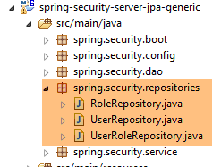 |
L'interface [UserRepository] gère les accès aux entités [User] :
package spring.security.repositories;
import generic.jpa.entities.dbproduitscategories.Role;
import generic.jpa.entities.dbproduitscategories.User;
import org.springframework.data.jpa.repository.Query;
import org.springframework.data.repository.CrudRepository;
public interface UserRepository extends CrudRepository<User, Long> {
// liste des rôles d'un utilisateur identifié par son id
@Query("select ur.role from UserRole ur where ur.user.id=?1")
Iterable<Role> getRoles(long id);
// liste des rôles d'un utilisateur identifié par son login unique
@Query("select ur.role from UserRole ur where ur.user.login=?1 and ur.user.password=?2")
Iterable<Role> getRoles(String login, String password);
// recherche d'un utilisateur via son login
User findUserByLogin(String login);
}
- ligne 9 : l'interface [UserRepository] étend la l'interface [CrudRepository] de Spring Data (ligne 7) ;
- lignes 12-13 : la méthode [getRoles(long id)] permet d'avoir tous les rôles d'un utilisateur identifié par son [id]
- lignes 16-17 : idem mais pour un utilisateur identifié pas ses login / mot de passe ;
- ligne 20 : pour trouver un utilisateur via son login ;
L'interface [RoleRepository] gère les accès aux entités [Role] :
package spring.security.repositories;
import generic.jpa.entities.dbproduitscategories.Role;
import org.springframework.data.repository.CrudRepository;
public interface RoleRepository extends CrudRepository<Role, Long> {
// recherche d'un rôle via son nom
Role findRoleByName(String name);
}
- ligne 7 : l'interface [RoleRepository] étend l'interface [CrudRepository] ;
- ligne 10 : on peut chercher un rôle via son nom. On rappelle ici que l'entité [Role] a un champ [name]. La méthode [findEntityByChamp] est automatiquement implémentée par Spring Data. Il n'y a donc pas lieu ici d'implémenter la méthode [finRoleByName]. Il faut juste la déclarer dans l'interface.
L'interface [UserRoleRepository] gère les accès aux entités [UserRole] :
package spring.security.repositories;
import generic.jpa.entities.dbproduitscategories.UserRole;
import org.springframework.data.repository.CrudRepository;
public interface UserRoleRepository extends CrudRepository<UserRole, Long> {
}
- ligne 7 : l'interface [UserRoleRepository] se contente d'étendre l'interface [CrudRepository] sans lui ajouter de nouvelles méthodes ;
20.4.5. La couche [DAO2]
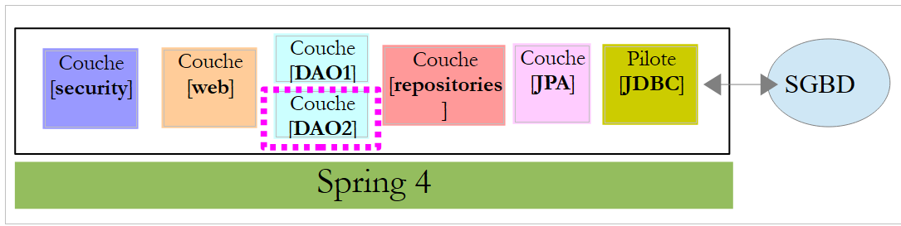 |
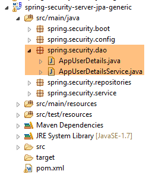 |
Dans la couche [DAO2], on retrouve les mêmes classes que dans la couche [DAO2] du projet [spring-security-server-jdbc-generic] étudié précédemment au paragraphe 20.2.2. Il faut simplement les implémenter maintenant avec l'aide des classes de la couche [repositories].
La classe [AppUserDetails] évolue de la façon suivante :
package spring.security.dao;
import generic.jpa.entities.dbproduitscategories.Role;
import generic.jpa.entities.dbproduitscategories.User;
import java.util.ArrayList;
import java.util.Collection;
import org.springframework.security.core.GrantedAuthority;
import org.springframework.security.core.authority.SimpleGrantedAuthority;
import org.springframework.security.core.userdetails.UserDetails;
import spring.data.infrastructure.DaoException;
import spring.security.repositories.UserRepository;
public class AppUserDetails implements UserDetails {
private static final long serialVersionUID = 1L;
// propriétés
private User user;
private UserRepository userRepository;
// local
private String simpleClassName = getClass().getSimpleName();
// constructeurs
public AppUserDetails() {
}
public AppUserDetails(User user, UserRepository userRepository) {
this.user = user;
this.userRepository = userRepository;
}
// -------------------------interface
@Override
public Collection<? extends GrantedAuthority> getAuthorities() {
Collection<GrantedAuthority> authorities = new ArrayList<>();
Iterable<Role> roles;
try {
roles = userRepository.getRoles(user.getId());
} catch (Exception e) {
e.printStackTrace();
throw new DaoException(167, e, simpleClassName);
}
for (Role role : roles) {
authorities.add(new SimpleGrantedAuthority(role.getName()));
}
return authorities;
}
...
}
- ligne 31, le constructeur de la classe reçoit comme second paramètre l'objet [UserRepository] qui permetta à la classe d'obtenir les rôles d'un utilisateur donné (ligne 42) ;
Le composant Spring [AppUserDetailsService] évolue lui de la façon suivante :
package spring.security.dao;
import generic.jpa.entities.dbproduitscategories.User;
import org.springframework.beans.factory.annotation.Autowired;
import org.springframework.security.core.userdetails.UserDetails;
import org.springframework.security.core.userdetails.UserDetailsService;
import org.springframework.security.core.userdetails.UsernameNotFoundException;
import org.springframework.stereotype.Service;
import spring.data.infrastructure.DaoException;
import spring.security.repositories.UserRepository;
@Service
public class AppUserDetailsService implements UserDetailsService {
@Autowired
private UserRepository userRepository;
// local
private String simpleClassName = getClass().getName();
@Override
public UserDetails loadUserByUsername(String login) throws UsernameNotFoundException {
// on cherche l'utilisateur via son login
User user;
try {
user = userRepository.findUserByLogin(login);
} catch (Exception e) {
throw new DaoException(168, e, simpleClassName);
}
// trouvé ?
if (user == null) {
throw new UsernameNotFoundException(String.format("login [%s] inexistant", login));
}
// on rend les détails de l'utilisateur
return new AppUserDetails(user, userRepository);
}
}
- ligne 18 : injection du composant Spring [userRepository] qui va permettre au service de rendre l'utilisateur identifié par son login, ligne 27 ;
Au final, on se rend compte qu'on n'a besoin que du [userRepository] et pas des deux autres repositories [roleRepository, userRoleRepository]. Ceux-ci vont être utilisés dans le projet suivant qui vise à remplir les tables [USERS, ROLES, USERS_ROLES].
20.4.6. Les tests
Le service web sécurisé est lancé avec la configuration nommée [spring-security-server-jpa-generic-hibernate-eclipselink] [1]. Le test [JUnitTestDao] du client générique est lancé avec la configuration nommée [spring-security-client-generic-JUnitTestDao] [2] :
 |
Les tests réussissent.
20.5. Le projet Eclipse [spring-security-create-users]
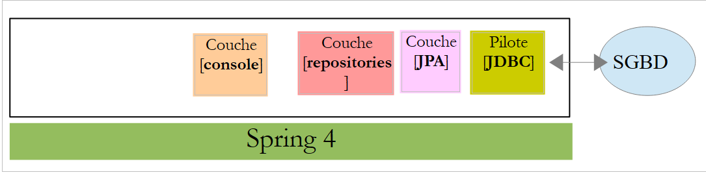 |
 |
20.5.1. La base de données
L'exécution du projet remplit les tables [USERS, ROLES, USERS_ROLES] de la table [dbproduitscategories] :

|
|
Les identifiants créés [login/passwd] sont les suivants : [admin/admin], [user/user], [guest/guest]. En base, les mots de passe sont cryptés.
|
20.5.2. Configuration Maven
Le projet est un projet Maven configuré par le fichier [pom.xml] suivant :
<?xml version="1.0" encoding="UTF-8"?>
<project xmlns="http://maven.apache.org/POM/4.0.0" xmlns:xsi="http://www.w3.org/2001/XMLSchema-instance"
xsi:schemaLocation="http://maven.apache.org/POM/4.0.0 http://maven.apache.org/xsd/maven-4.0.0.xsd">
<modelVersion>4.0.0</modelVersion>
<groupId>dvp.spring.database</groupId>
<artifactId>spring-security-create-users-jpa</artifactId>
<version>0.0.1-SNAPSHOT</version>
<packaging>jar</packaging>
<name>spring-security-create-users-jpa</name>
<description>création de utilisateurs dans la base [dbproduitscategories]</description>
<parent>
<groupId>org.springframework.boot</groupId>
<artifactId>spring-boot-starter-parent</artifactId>
<version>1.2.3.RELEASE</version>
</parent>
<dependencies>
<!-- Spring security -->
<dependency>
<groupId>org.springframework.boot</groupId>
<artifactId>spring-boot-starter-security</artifactId>
</dependency>
<!-- spring-security-server-jpa-generic -->
<dependency>
<groupId>dvp.spring.database</groupId>
<artifactId>spring-security-server-jpa-generic</artifactId>
<version>0.0.1-SNAPSHOT</version>
</dependency>
</dependencies>
<properties>
<project.build.sourceEncoding>UTF-8</project.build.sourceEncoding>
<java.version>1.7</java.version>
</properties>
<build>
<plugins>
<plugin>
<groupId>org.apache.maven.plugins</groupId>
<artifactId>maven-surefire-plugin</artifactId>
<version>2.18.1</version>
</plugin>
</plugins>
</build>
</project>
- lignes 22-25 : dépendance sur le framework Spring Security. L'algorithme de cryptage des mots de passe est fourni par ce framework
- lignes 27-31 : dépendance sur le projet [spring-security-server-jpa-generic] que nous venons de construire. Ce projet implémente les couches [repositories] et [JPA] du projet ;
Au final, les dépendances sont les suivantes :
 |
20.5.3. La couche [console]
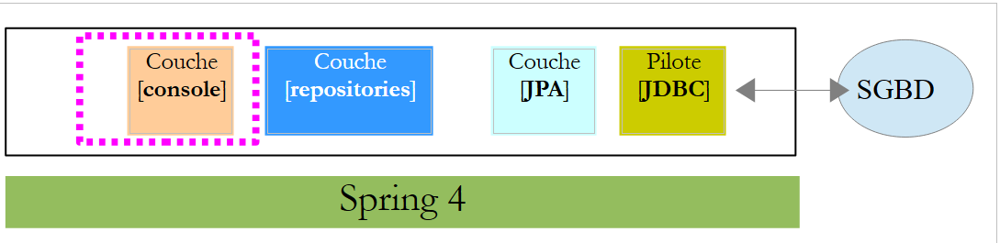 |
Les couches [repositories] et [JPA] étant implémentées par la dépendance [spring-security-server-jpa-generic], il n'y a que la couche [console] à implémenter.
 |
- [AppConfig] est la classe de configuration Spring du projet ;
- [CreateUsers] est la classe exécutable qui crée des utilisateurs et des rôles ;
- [Base64Encoder] est une classe support pour générer le code Base64 d'un couple [login, password]. Nous l'avons déjà utilisée. Elle n'est pas utile à ce projet ;
La classe de configuration Spring [AppConfig] est la suivante :
package spring.security.install;
import generic.jpa.config.ConfigJpa;
import org.springframework.context.annotation.Configuration;
import org.springframework.context.annotation.Import;
import org.springframework.data.jpa.repository.config.EnableJpaRepositories;
@Configuration
@EnableJpaRepositories(basePackages = { "spring.security.repositories" })
@Import({ ConfigJpa.class })
public class AppConfig {
}
- ligne 10 : on indique où trouver les [repositories] de l'application. Ils sont trouvés dans le package [spring.security.repositories] de la dépendance [spring-security-server-jpa-generic]
- ligne 11 : on importe les beans de la classe [ConfigJpa] qui configure la couche [JPA] du projet. Cette classe sera trouvée dans la dépendance [mysql-config-jpa-hibernate] :
 |
La classe [CreateUsers] est la suivante :
package spring.security.install;
import generic.jpa.entities.dbproduitscategories.Role;
import generic.jpa.entities.dbproduitscategories.User;
import generic.jpa.entities.dbproduitscategories.UserRole;
import org.springframework.context.annotation.AnnotationConfigApplicationContext;
import org.springframework.security.crypto.bcrypt.BCrypt;
import spring.security.repositories.RoleRepository;
import spring.security.repositories.UserRepository;
import spring.security.repositories.UserRoleRepository;
public class CreateUsers {
public static void main(String[] args) {
// fin
System.out.println("Travail en cours...");
// on crée trois utilisateurs
String[] logins = { "admin", "user", "guest" };
String[] passwds = { "admin", "user", "guest" };
String[] roles = { "admin", "user", "guest" };
// contexte Spring
AnnotationConfigApplicationContext context = new AnnotationConfigApplicationContext(AppConfig.class);
UserRepository userRepository = context.getBean(UserRepository.class);
RoleRepository roleRepository = context.getBean(RoleRepository.class);
UserRoleRepository userRoleRepository = context.getBean(UserRoleRepository.class);
for (int i = 0; i < logins.length; i++) {
// on récupère les informations de l'utilisateur n° i
String login = logins[i];
String password = passwds[i];
String roleName = String.format("ROLE_%s", roles[i].toUpperCase());
// le rôle existe-t-il déjà ?
Role role = roleRepository.findRoleByName(roleName);
// s'il n'existe pas on le crée
if (role == null) {
role = roleRepository.save(new Role(roleName));
}
// l'utilisateur existe-t-il déjà ?
User user = userRepository.findUserByLogin(login);
// s'il n'existe pas on le crée
if (user == null) {
// on hashe le mot de passe avec bcrypt
String crypt = BCrypt.hashpw(password, BCrypt.gensalt());
// on sauvegarde l'utilisateur
user = userRepository.save(new User(null, null, login, login, crypt));
// on crée la relation avec le rôle
userRoleRepository.save(new UserRole(user, role));
} else {
// l'utilisateur existe déjà- a-t-il le rôle demandé ?
boolean trouvé = false;
for (Role r : userRepository.getRoles(user.getId())) {
if (r.getName().equals(roleName)) {
trouvé = true;
break;
}
}
// si pas trouvé, on crée la relation avec le rôle
if (!trouvé) {
userRoleRepository.save(new UserRole(user, role));
}
}
}
// fermeture contexte Spring
context.close();
// fin
System.out.println("Travail terminé...");
}
}
- lignes 22-24 : définissent les login, mot de passe et rôle de trois utilisateurs ;
- ligne 27 : le contexte Spring est construit à partir de la classe de configuration [AppConfig] ;
- lignes 28-30 : on récupère les références des trois [Repository] qui peuvent nous être utiles pour créer un utilisateur ;
- ligne 31 : on crée les trois utilisateurs ;
- lignes 33-35 : les informations pour créer l'utilisateur n° i ;
- ligne 37 : on regarde si le rôle existe déjà ;
- lignes 39-41 : si ce n'est pas le cas, on le crée en base. Il aura un nom du type [ROLE_XX] ;
- ligne 43 : on regarde si le login existe déjà ;
- lignes 45-52 : si le login n'existe pas, on le crée en base ;
- ligne 47 : on crypte le mot de passe. On utilise ici, la classe [BCrypt] de Spring Security (ligne 8). On a donc besoin des archives de ce framework. Le fichier [pom.xml] inclut cette dépendance :
<dependency>
<groupId>org.springframework.boot</groupId>
<artifactId>spring-boot-starter-security</artifactId>
</dependency>
- ligne 49 : l'utilisateur est persisté en base ;
- ligne 51 : ainsi que la relation qui le lie à son rôle ;
- lignes 55-60 : cas où le login existe déjà – on regarde alors si parmi ses rôles se trouve déjà le rôle qu'on veut lui attribuer ;
- ligne 62-64 : si le rôle cherché n'a pas été trouvé, on crée une ligne dans la table [USERS_ROLES] pour relier l'utilisateur à son rôle ;
- on ne s'est pas protégé des exceptions éventuelles. C'est une classe de support pour créer rapidement des utilisateurs ;
Pour exécuter le projet, on exécutera la configuration d'exécution nommée [spring-security-create-users-hibernate-eclipselink] :
 |
Nous venons de construire deux services web sécurisés :
- l'un avec une architecture [security / web / JDBC / MySQL] ;
- l'autre avec une architecture [security / web / Hibernate / MySQL] ;
Nous abordons maintenant deux autres architectures :
- une architecture [security / web / EclipseLink / SQL Server 2014 Express] ;
- une architecture [security / web / OpenJpa / Oracle Express] ;
20.5.4. Architecture [security / web / EclipseLink / SQL Server]
 |
 |
- en [1], on charge les projets configurant une couche [JDBC / SQL Server] et une couche [JPA / EclipseLink / SQL Server] ;
Note : faire Alt-F5 puis régénérer tous les projets Maven.
On suppose que le SGBD SQL Server est lancé et que la base [dbproduitscategories] a été générée. Il nous faut tout d'abord remplir les tables [USERS, ROLES, USERS_ROLES] de cette base de données. Pour cela exécutez la configuration d'exécution nommée [spring-security-create-users-hibernate-eclipselink] :
 |  |
Elle doit remplir les trois tables avec des données :
 |  |
 |
 |
- lancez le service web sécurisé avec la configuration nommée [spring-security-server-jpa-generic-hibernate-eclipselink][1] ;
- lancez le test JUnitTestDao avec la configuration nommée [spring-security-client-generic-JUnitTestDao][2]. Il doit réussir [3] ;
 |
 |
20.5.5. Architecture [security / web / OpenJpa / Oracle Express]
 |
 |
- en [1], on charge les projets configurant une couche [JDBC / Oracle Express] et une couche [JPA / OpenJpa / Oracle Express] ;
Note : faire Alt-F5 puis régénérer tous les projets Maven.
On suppose que le SGBD Oracle Express est lancé et que la base [dbproduitscategories] a été générée. Il nous faut tout d'abord remplir les tables [USERS, ROLES, USERS_ROLES] de cette base de données. Pour cela exécutez la configuration d'exécution nommée [spring-security-create-users-openjpa] :
 |  |
Elle doit remplir les trois tables avec des données :
 |  |
 |
 |
- lancez le service web sécurisé avec la configuration nommée [spring-security-server-jpa-generic-openjpa][1-2] ;
- lancez le test JUnitTestDao avec la configuration nommée [spring-security-client-generic-JUnitTestDao][3]. Il doit réussir [4] ;
 |
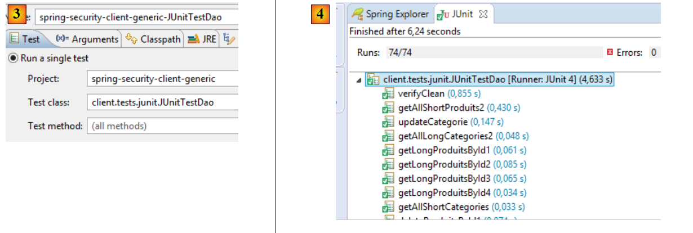 |